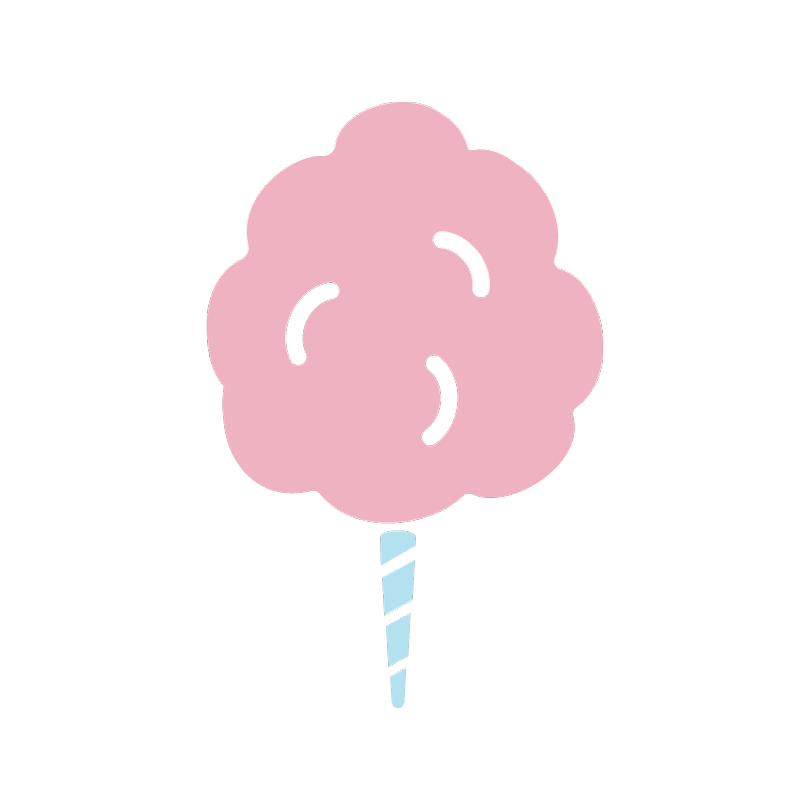
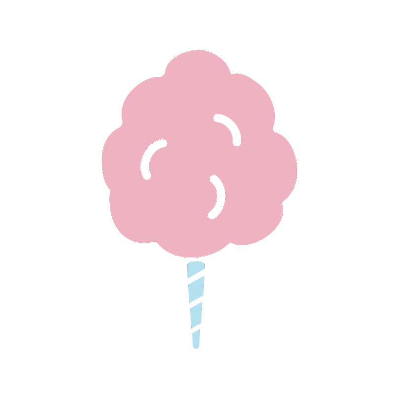

ASSESSMENT PORTFOLIO

Abdulelah Ghali
Date of Birth: 16 July 2015
HeightL 2ft 6in | Weight: 16KGs
Cotton Candy Class
(1 - 2 years)
D: Developing | M: Meeting | E: Exceeding
Abdulelah Ghali
Date of Birth: 16 July 2015
HeightL 2ft 6in | Weight: 16KGs
Cotton Candy Class
(1 - 2 years)
D: Developing | M: Meeting | E: Exceeding
In the early years children learn and develop on a daily basis because of their instinctive desire to learn, explore and discover.
Evaluating your child's progress is an important part of our role as early childhood educators. It means deciding what level your child has reached on the progression shown for the objectives in the Teaching Strategies GOLD assessment system.
Teaching Strategies GOLD is an authentic, observational assessment system for children from birth through kindergarten. It helps us to know our children well, what they know and can do, and their strengths, needs and interests. With this information we can guide children's learning by planning engaging experiences that are responsive to individual and group needs.
All children develop at their own pace and achieve objectives at different times and stages of development. Objectives for development and learning are our essential resource to use with any developmentally appropriate curriculum and is our starting point for assessment, as they have always been. Teachers use them to focus their observations and respond appropriately.
Home Sweet Home's assessment system has been developed based on research on the characteristics of child development, and is designed to meet the widely held expectations for each age group. With an ongoing assessment system, we are continually watching, observing and documenting. At certain times, we pause, reflect and take a snapshot of how a child is progressing in relation to the objectives and dimensions of Teaching Strategies GOLD.
All teachers are assessing children by following the same strategies for consistency, reliability and accurate assessments standards.
We trust that you will find our assessment portfolio informative and thought-provoking as we seek to work together on your child’s foundations for life.
Reem Abdulaziz Daghistani
General Director

| Objectives for Development and Learning | First Semester | Second Semester | ||||
| D | M | E | D | M | E | |
| Social-Emotional | ||||||
| Regulates own emotions and behaviors | ||||||
| Manages Feelings | ||||||
| Uses adult support to calm self | X | |||||
| Comforts self by seeking out special object or person | X | |||||
| Follows Limits and Expectations | ||||||
| Responds to changes in an adult’s tone of voice and expression | X | |||||
| Accepts redirection from adults | X | |||||
| Takes care of own needs appropriately | ||||||
| Indicates needs and wants; participates as adult attends to needs | X | |||||
| Seeks to do things for self | X | |||||
| Establishes and sustains positive relationships | ||||||
| Forms relationships with adults | ||||||
| Demonstrates a secure attachment to one or more adults | X | |||||
| Uses trusted adult as a secure base from which to explore the world | X | |||||
| Responds to emotional cues | ||||||
| Reacts to others’ emotional expression | X | |||||
| Interacts with peers | ||||||
| Plays near other children; uses similar materials or action | X | |||||
| Makes friends | ||||||
| Seeks a preferred playmate; shows pleasure when seeing a friend | X | |||||
| Participates cooperatively and constructively in group situations | ||||||
| Balances needs and rights of self and others | ||||||
| Responds appropriately to others’ expressions of wants | X | |||||
| Solves social problem | ||||||
| Expresses feelings during a conflict | X | |||||
| Objectives for Development and Learning | First Semester | Second Semester | ||||
| D | M | E | D | M | E | |
| Physical | ||||||
| Demonstrates moving skills | ||||||
| Moves to explore immediate environment | X | |||||
| Experiments with different ways of moving | X | |||||
| Demonstrates balancing skills | ||||||
| Balances while exploring immediate environment | X | |||||
| Experiments with different ways of balancing | X | |||||
| Demonstrates gross-motor manipulative skills | ||||||
| Reaches, grasps and releases objects | X | |||||
| Manipulates balls or similar objects with stiff body movements | X | |||||
| Demonstrates fine-motor strength and coordination | ||||||
| Uses fingers and hands | ||||||
| Reaches for, touches and holds objects purposefully | X | |||||
| Uses fingers and whole-arm movements to manipulate and explore objects | X | |||||
| Uses writing and drawing tools | ||||||
| Grasps drawing and writing tools, jabbing at paper | X | |||||
| Language | ||||||
| Listens to and understands increasingly complex language | ||||||
| Comprehends language | ||||||
| Shows an interest in the speech of others | X | |||||
| Identifies familiar people, animals and objects when prompted | X | |||||
| Follows directions | ||||||
| Responds to simple verbal requests accompanied by gestures or tone of voice | X | |||||
| Follows simple requests not accompanied by gestures | X | |||||
| Follows directions of two or more steps that relate to familiar objects and experiences | X | |||||
| Uses language to express thoughts and needs | ||||||
| Uses an expanding expressive vocabulary | ||||||
| Objectives for Development and Learning | First Semester | Second Semester | ||||
| D | M | E | D | M | E | |
| Vocalizes and gestures to communicate | X | |||||
| Names familiar people, animals and objects | X | |||||
| Speaks clearly | ||||||
| Babbles strings of single consonant sounds and combines sounds | X | |||||
| Uses some words and word-like sounds and is understood by most familiar people | X | |||||
| Uses conventional grammar | ||||||
| Uses one or two-word sentences or phrases | X | |||||
| Tells about another time or place | ||||||
| Makes simple statements about recent events and familiar people and objects that are not present. | X | |||||
| Uses appropriate conversational and other communication skills | ||||||
| Engages in conversation | ||||||
| Engages in simple back- and forth exchanges with others | X | |||||
| Initiates and attends to brief conversations | X | |||||
| Uses social rules of language | ||||||
| Responds to speech by looking towards the speaker; watches for signs of being understood when communicating | X | |||||
| Uses appropriate eye contact, pauses and simple verbal prompts when communicating | X | |||||
| Cognitive | ||||||
| Demonstrates positive approaches to learning | ||||||
| Attends and engages | ||||||
| Pays attention to sights and sounds | X | |||||
| Persists | ||||||
| Repeats actions to obtain similar results | X | |||||
| Practices an activity many times until successful | X | |||||
| Solves problems | ||||||
| Reacts to a problem; seeks to achieve a specific goal | X | |||||
| Objectives for Development and Learning | First Semester | Second Semester | ||||
| D | M | E | D | M | E | |
| Shows curiosity and motivation | ||||||
| Uses senses to explore the immediate environment | X | |||||
| Shows flexibility and inventiveness in thinking | ||||||
| Imitates others in using objects in new and unanticipated ways | X | |||||
| Remembers and connects experiences | ||||||
| Recognizes and recalls | ||||||
| Recognizes familiar people, places and objects; looks for hidden objects where it was last seen | X | |||||
| Makes connections | ||||||
| Looks for familiar persons when they are named; relates objects to Events | X | |||||
| Uses classification skills | ||||||
| Matches similar objects | X | |||||
| Uses symbols and images to represent something not present | ||||||
| Thinks symbolically | ||||||
| Recognizes people, objects and animals in pictures or photographs | X | |||||
| Engages in sociodramatic play | ||||||
| Imitates actions of others during play; uses real objects as props | X | |||||
| Literacy | ||||||
| Demonstrates phonological awareness | ||||||
| Notices and discriminates rhyme | ||||||
| Joins in rhyming songs and games | X | |||||
| Demonstrates knowledge of print and its uses | ||||||
| Uses and appreciates books | ||||||
| Shows interest in books | X | |||||
| Demonstrates emergent writing skills | ||||||
| Writes name | ||||||
| Scribbles or marks | X | |||||
| Objectives for Development and Learning | First Semester | Second Semester | ||||
| D | M | E | D | M | E | |
| Writes to convey meaning | ||||||
| Scribbles or marks | X | |||||
| Mathematics | ||||||
| Uses number concepts and operations | ||||||
| Counts | ||||||
| Verbally counts (not always in the correct order) | X | |||||
| Quantifies | ||||||
| Demonstrates understanding of the concept of one, two and more | X | |||||
| Explores and describes spatial relationships and shapes | ||||||
| Understands spatial relationships | ||||||
| Follows simple directions related to position (in, on, under, up, down) | X | |||||
| Understands shapes | ||||||
| Matches two identical shapes | X | |||||
| Compares and measures | ||||||
| Makes simple comparisons between two objects | X | |||||
| Demonstrates knowledge of patterns | ||||||
| Shows interest in simple patterns in everyday life | X | |||||